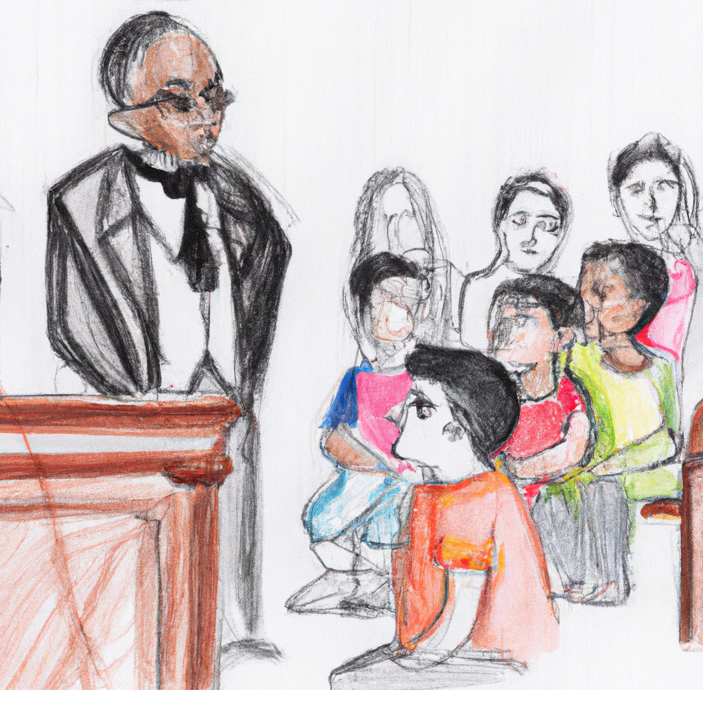

Bonjour, je suis Alice. Nous sommes le 19 janvier 2058 et aujourd'hui, j'ai 12 ans.
Je me réveille tranquillement, prête à aller manger mon beau gâteau. Ce matin maman va m'emmener
faire
du shopping.
C'est la première fois que cela m'angoisse. Quel vêtement vais-je pouvoir choisir pour être dans les
règles ?
Ah oui, il faut que je vous explique, pourquoi cette question ?
Et si vous vous mettiez dans la peau d'Alice ...
A partir d'aujourd'hui, je suis responsable de mon quota de textile à ne pas dépasser.
En cours de maths, nous avons appris à calculer des périmètres et aires pour pouvoir faire les
calculs !
Si je me souviens bien des cours de sensibilisation que nous avons eu, il est calculé selon la
surface
de tissu (ce qui nous oblige à garder la ligne !).
Mais pas seulement, il prend aussi en compte la consommation d'eau et l'empreinte carbone lors de la
production ainsi que la distance que le vêtement a parcourue !
Ce n'est pas tout, face à la maltraitance que nos ancêtres ont fait vivre aux animaux, il prend
aussi en
compte la matière du vêtement (animale, végétale, synthétique).
Bref, un vrai casse-tête. En plus, des affiches sont présentes dans toute la ville de
Carbone50-textile.
Cette chose qui a imposé tout ça en France. Une angoisse permanente…
En effet, les sanctions sont sévères pour retrouver un quota favorable. Allant du travail forcé à
l'amputation d'un membre jusqu'au décès d'une personne sacrifiant sa peau pour en faire du cuir
et remboursant le quota d'autres personnes. Malheureusement, dans notre famille, nous ne savons ni
coudre, ni cultiver les champs et les cours pour apprendre sont super chers.
Toute la famille est triste, mémé a dû se sacrifier pour que nous puissions retrouver un petit moment de
sérénité, autant dire que ce n'est pas la joie dans la famille.
Maman a dit qu'il ne fallait surtout pas parler du sujet…

Aujourd'hui, quand je suis devant ce magasin je ne veux pas que ça continue. J'utiliserai mes
vêtements jusqu'au bout quitte à être discriminée par Adam.
Oui, lui il s'en fou ses parents sont riches, il achète local mais cher. Ainsi, son score ne s'élève pas
beaucoup.
Peu importe, dans un mois, il déménage pour une ville avec un quota faible avec des habitants comme lui.
Ici, la piscine est fermée depuis 3 mois à cause du dépassement de quota.
Le but ? Réduire de nous-même la surconsommation de textile. Selon pépé, quand papa était petit, il ne
pouvait pas se baigner dans la rivière.
Aujourd'hui, je vais pouvoir aller jouer avec mes amis les poissons.
Ainsi, cela favorise la qualité de l'air et des sols,
c'est ce que nous a raconté monsieur le professeur.
Il a fini par cette phrase : « Portons le changement, verdissons notre nature ! ».
Illustrations générées avec DALL·E